Практичні курси · журнал «ДентАрт» 2023 №3
Реконструкція лінії усмішки — консервативна корекція естетики
Reconstruction of smile line as conservative aesthetic correction
Зазвичай пацієнти звертаються до стоматолога не тільки за здоров'ям зубів, але й за красою усмішки. Сьогодні красу і естетику усмішки все більше пов'язують з розмірами, пропорціями і візуальною симетрією зубів, ну і, звичайно ж, їх кольором. На жаль, не всім від природи дано зуби правильної форми і позиції в дузі. І в кожному випадку необхідно затратити чимало часу і сил для того, щоб вивчити ситуацію і прорахувати всі варіанти і можливості лікування.
Зміна форми і положення в дузі передніх зубів у цілому є значним втручанням у дизайн обличчя людини, що створює серйозні психологічні проблеми, пов'язані з оцінкою зробленої реконструкції зубів самим пацієнтом і його оточенням.2
Ще у 1997 році С. Радлінський ввів поняття реконструкції зубного ряду як окремого виду прямої художньої реставрації. І цей напрямок одержав широкий розвиток в естетичній стоматології. Усі можливості реконструкції зубів застосовуються як інструмент, за допомогою якого стоматолог виконує завдання оптимізації зубного ряду в прямій адгезивній техніці.1 Така реставрація дозволяє лікареві зробити усмішку бездоганною в короткі терміни. Сучасні адгезивні матеріали у поєднанні з досвідом і естетичним баченням стоматолога стають запорукою успіху при моделюванні усмішки, забезпечуючи передбачуваність як естетичного, так і лікувального результату для пацієнта.
Залежно від складності випадку можливе виконання реконструкції зубів і зубних рядів, трансформації зубів за один візит. Такий вид втручання прийнятний, коли структури коронки зуба не порушені, тобто зуб залишається інтактним, але пацієнта з якихось міркувань не влаштовують форма і розміри зуба, розташування зубів у зубному ряду. Цей вид реставрації зубів вимагає від лікаря-стоматолога найвищої майстерності і значного досвіду, а також розвинених художніх здібностей.
Таку ж саму за підсумками реабілітацію естетики усмішки можна зробити, застосовуючи непрямі методики (протезування коронками, вінірами і т. д.) з етапом зуботехнічної лабораторії. Але в цьому випадку необхідно буде пожертвувати великим об'ємом зубних тканин. Протезування — менш консервативне втручання, що не піддається подальшому лагодженню і вимагає великих часових та матеріальних затрат.
Ще одним варіантом допомоги, найбільш коректним з позиції оклюзії, є етап ортодонтичного лікування, але в цьому випадку пацієнтові треба бути готовим до тривалішого терміну досягнення результату, до кількох років. Пацієнти ортодонтичних клінік, як правило, стурбовані зміною зовнішнього вигляду, порушеннями вимови звуків, мови, неповноцінним жуванням, обмеженнями в публічності професії, труднощами спілкування і проблемами з гігієнічним доглядом за зубами. Вираженість переживань залежить від багатьох факторів: нервової діяльності, особливостей сприйняття своєї зовнішності, обстановки в сім'ї, власної оцінки внутрішньої картини хвороби, вихованості оточуючих.
На етапах консультації ми повинні докладно інформувати наших пацієнтів про всі можливі варіанти стоматологічної допомоги, за необхідності послати на консультацію до інших спеціалістів. Це необхідно для остаточного вибору методу самим пацієнтом. При складанні плану реконструкції зубних рядів слід враховувати думку як лікаря, так і пацієнта. Але якими б не були естетичні вимоги наших пацієнтів, неодмінним фактором успіху і для них, і для фахівця, який відповідає за свою роботу, залишається повноцінне і довгострокове функціонування всіх конструкцій.
У деяких складних клінічних ситуаціях для забезпечення повноцінної функції жування і задоволення естетичних вимог пацієнта без лікування у лікаря-ортодонта не обійтися. Деякі аномалії положення зубів і деформації зубних рядів супроводжуються функціональним травматичним перевантаженням пародонта, що не дозволяє зробити ефективне реставраційне відновлення без виправлення зубощелепних аномалій та деформацій.4 Після повернення зубів у правильну позицію ортодонтичними апаратами може йти етап реконструкції зубного ряду — як складова ланка комплексної реабілітації. Обов'язковою процедурою за такого підходу є подальша іммобілізація зубів за допомогою кап, ретейнерів або шин.
Планування реставрації
При виборі прямої реставрації важливо досконало знати анатомію зубів, уміти майстерно повторити її ознаки. Виконання такої реставрації вимагає не тільки гарної підготовки і досвіду, а й розвинених художніх здібностей і просторового мислення. Функціональні, естетичні, структурні і біологічні параметри зубних рядів повинні гармоніювати між собою.
До проведення всіх розрахунків важливо точно визначити колірну конструкцію реставрації. Необхідно не тільки визначити колір тіла коронки за шкалою еталонів, а й зафіксувати параметри прозорості та яскравості коронок, які не менше впливають на сприйняття кольору. При перебудовах і трансформаціях зубів підходить біоміметичний метод реставрації, де кожна складова тканини зуба має свій композитний відтінок-імітатор у параметрах світлоти, хроматичності та прозорості, важливо задаптувати його на «своє» топографічне місце в реставрованому зубі. За такого рецепту реставрації немає жодних проблем потрапляння в колір, колір сам потрапляє в реставрацію.
З огляду на естетичні вимоги, існує ще одна умова для досягнення гармонії при реконструкції зубного ряду — обов'язкова корекція контактних просторів, особливо якщо деякі зуби мають незвичайні анатомічні параметри. При плануванні лікування завжди слід брати до уваги різницю у співвідношенні розмірів зубів і для вирішення цієї проблеми розрахувати розміри зубів для естетичної компенсації. Визначаємо взаємовідношення розмірів зубів, застосовуючи правило «золотих пропорцій». Штангенциркуль — універсальний інструмент, який використовується для точних вимірювань зовнішніх розмірів зубів, він і допоможе визначити майбутні пропорційні розміри. Зуби вимірюються вздовж лінії за контактними номерами точок, а формула розрахунку пропорційності зубів дозволить визначити гармонійні розміри майбутніх реставрацій. Маючи 6 значень, ми можемо їх скласти і одержати суму, яка відповідатиме довжині дуги від ікла до ікла. А знаючи коефіцієнти пропорційності зубів, включених у розрахунок, можемо отримати точні зовнішні розміри реставрованих зубів у їх гармонійних пропорціях.
Також можливе використання естетичного цифрового моделювання усмішки для мотивації та інформування пацієнта. Віртуальне моделювання — це простий і економічний спосіб демонстрації пацієнтові очікуваного результату лікування. Існує багато способів цифрової обробки зображень у залежності від вимог до моделювання усмішки: можна використовувати різні програми, які легко знайти в інтернет-ресурсах, — усе залежить від досвіду і практики роботи з цифровими зображеннями. У найпростіших програмах досить легко зробити моделювання усмішки зі схематичною побудовою контуру зубів. Враховується стать, вік пацієнта, форма обличчя, вигини внутрішніх контурів губ… Загалом, усі зовнішні параметри «оправи» усмішки мають значення.
Препарування зубів
Однією з головних переваг прямої реставрації композитними матеріалами є технологія мінімального втручання, щадне препарування об'єму тканин, потрібного для адекватної адгезії і міцності реставрації. Препарування проводять фінішними алмазними борами в турбінному наконечнику з охолодженням водою. При дефіциті місця для реставрації або значних нахилах зубів допустиме збільшення обсягів препарування для оптимізації позиції коронки зуба в дузі як реставраційної основи. При профіциті місця немає необхідності препарувати тканини зубів борами, досить зачистити безпризмовий шар емалі шліфувальними абразивними формами на швидкості 5000-10000 обертів за хвилину з водяним охолодженням або обробити тканини піскоструминно в межах поверхневих тканин. У зонах проксимальних поверхонь зубів для їх доадгезивної обробки використовуємо металеві штрипси середньої зернистості. Після препарування рекомендовано ще раз «приміряти» нові плановані поперечні розміри коронок у зубному ряду і за потреби перерахувати їх.
Виконання реконструкції зубного ряду дозволяє отримати передбачуваний і естетичний результат за досить короткий час. У будь-якому випадку очікуваний підсумок — рівні зуби. І як часто буває, у пацієнтів, котрі звертаються до нас, є великі очікування і дуже мало часу на досягнення успішного результату.
Прогноз таких конструкцій позитивний на термін служби мінімум 10 років. Секрет успіху — в міцному адгезивному з'єднанні всіх компонентів реставрації: власних тканин (дентину і емалі) з адгезивною основою — і перевірених у довгостроковому функціонуванні композитних матеріалів. Ключем до успішного моделювання форми передніх зубів є вибір матеріалу з відповідною опаковістю і прозорістю.
Поданий нижче клінічний випадок крок за кроком демонструє відновлення естетики при усуненні недоліків форми і позиції зубів найбільш консервативним способом без ортодонтичного лікування.
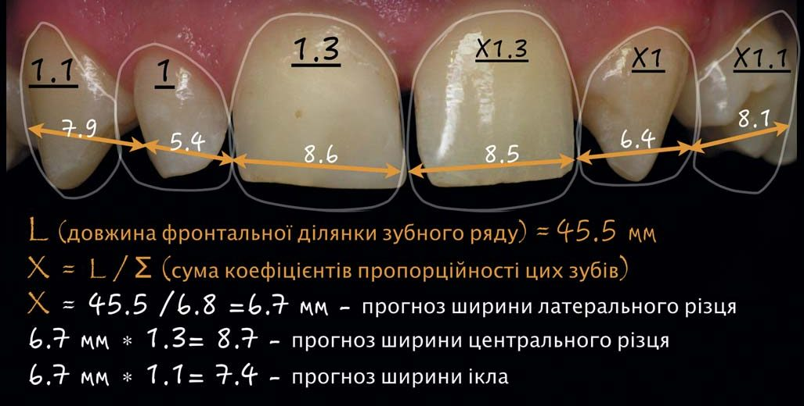
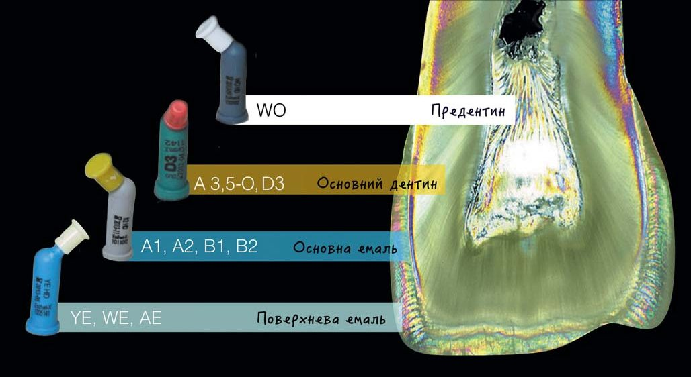
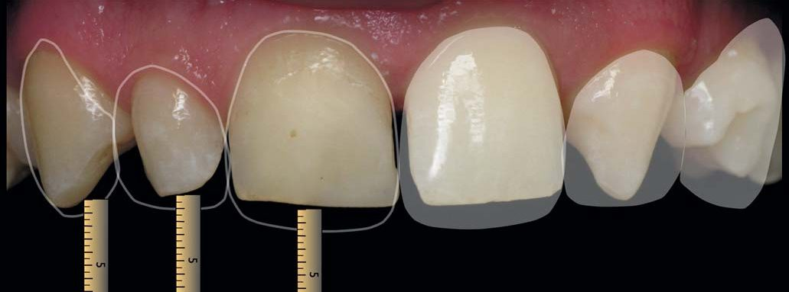
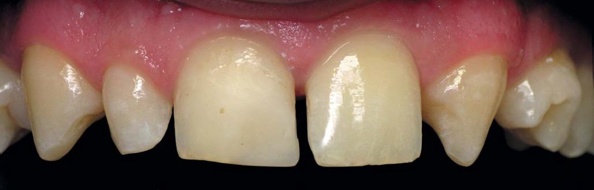
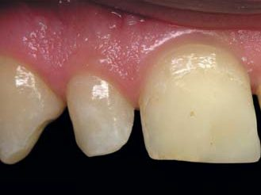
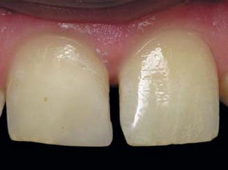
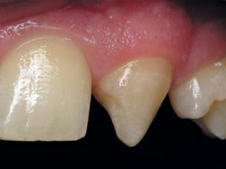
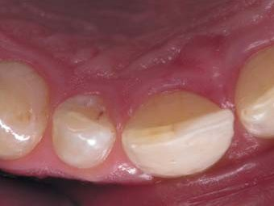
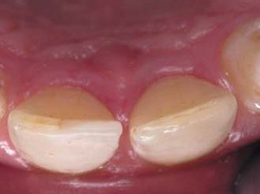
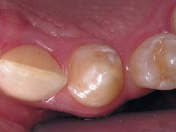
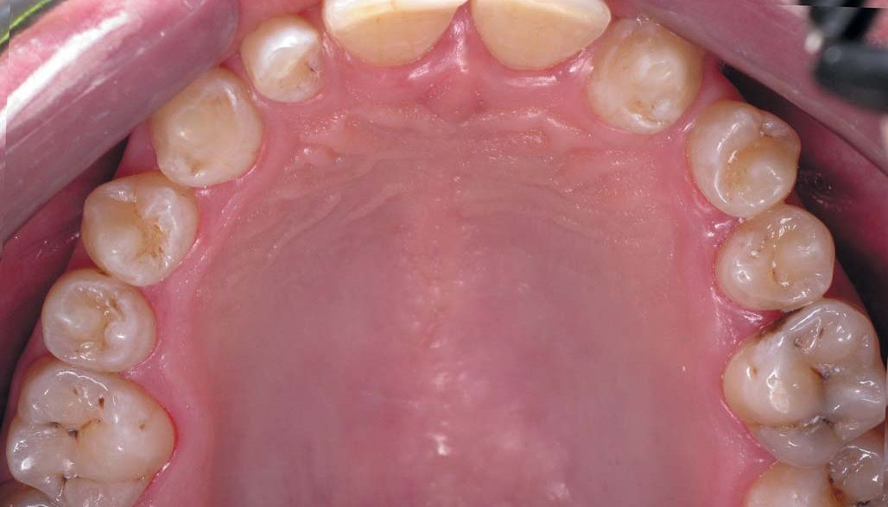
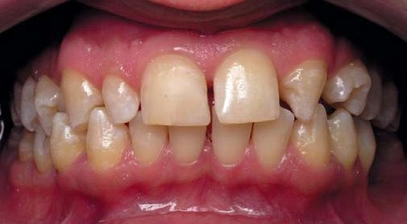
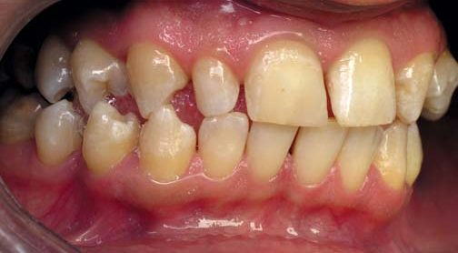
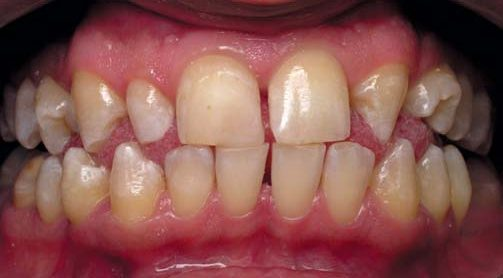
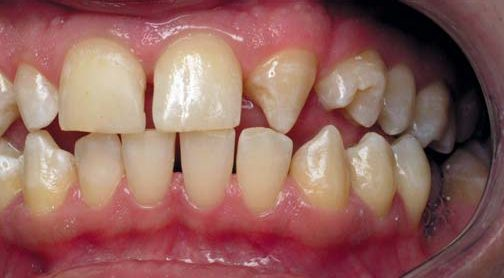
Фотографії шліфів зубів (надав С. Геранін) з відповідними композитними відтінками Esthet X HD, Ceram-X duo та Spectrum TPH (Dentsply); схема розрахунку зубного ряду з елементами DSD; початкова клінічна ситуація — звичне змикання, переднє, праве і ліве положення оклюзії.
Клінічний випадок
Пацієнт, 29 років, звернувся зі скаргами на незадовільну естетику фронтальних зубів верхньої щелепи. Завдання зробити візуально рівним зубний ряд, повернути зуби у правильну позицію в дузі, вирішити проблему вродженої адентії, на перший погляд, без ортодонтичного і хірургічного втручання здавалися нездійсненними.
Після кількох консультацій в інших клініках щодо можливості ортодонтичного лікування пацієнт повернувся в нашу клініку з тими самими скаргами. За часом були визначені дуже вузькі рамки — 3 тижні. Від лікування у лікаря-ортодонта та імплантації пацієнт відмовився через свої причини. Зроблено аналіз оклюзії і попередню фотореєстрацію клінічної ситуації.
ДІАГНОЗ: аномалійний нейтральний прикус. Діастема. Первинна адентія зуба 22. Мезіальне зміщення зубів 23, 24. Тортоаномалії зубів 14, 24.
Вивчивши дентальні фотографії та вислухавши всі побажання і вимоги пацієнта, ми взялися до планування етапів реабілітації. Обраний метод — виконання реконструкції лінії усмішки в техніці прямої адгезивної реставрації з корекцією форми і позиції зубів в лінії усмішки.
Клінічно можна відзначити явну різницю у формі латеральних зубів, оскільки вроджена адентія латерального різця ліворуч супроводжується репозицією на його місце лівого ікла. Ситуація ускладнена розворотами по осі зубів перших верхніх премолярів з двох боків, наявністю трем і діастеми. Також ми можемо спостерігати результат попереднього лікування правого верхнього центрального різця.
Дуже важливо було не лише трансформувати зуб 23 в латеральний різець, виконати реконструкцію зубів 13, 12 за формою, а й розгорнути візуально зуби 14, 24 в дузі, бо вони містяться в лінії усмішки.
Після розрахунку фронтальної ділянки верхнього зубного ряду і визначення довжини фронтальної ділянки виявлені гармонійні розміри зубів у фронтальному секстанті. Колір визначається до накладання рабердаму. Безумовно, репродукція кольору має безпосередній вплив на успіх в естетиці реставрації.
Препарування визначає розмір біологічної вартості роботи, існують загальні рекомендовані умови при оперативній підготовці тканин. Бажане використання оптичного збільшення для загальної візуалізації процесу препарування. Адгезивна процедура гранично проста: після ретельної оперативної підготовки поверхні зуба тканини вибірково протравлюються, вноситься універсальна адгезивна система XP BOND (Дентсплай Сірона), і ми беремося до пошарового накладання і полімеризації композиту. У реставрації використовувалися відтінки В1, YЕ наногібридного реставраційного матеріалу Esthet X HD (Дентсплай Сірона) для імітації емалі і відтінки D3 нанокерамічного матеріалу Ceram-X™ duo+ (Дентсплай Сірона) для імітації дентину.
Етап реконструкції зуба 14
Зроблено препарування виступаючих медіальних об'ємів емалі фінішним бором. Реконструкція щічного горбика відтінками В1, YЕ Esthet X HD (Дентсплай Сірона).
Корекція форми ікла
Абразивна підготовка емалі конусом Enhance Multi (Дентсплай Сірона). Такими ж самими відтінками зроблено корекцію форми і довжини правого ікла.
Трансформація премоляра в ікло
Зроблено препарування емалі в обсязі 1 мм на медіальній поверхні премоляра. Орієнтуючись на форму і довжину зуба 13, виконано трансформацію форми і позиції в дузі зуба 24 в ікло емалевими відтінками В1, YЕ Esthet X HD.
- тортоаномалії — розворот зуба по осі (найчастіше повертаються різці верхньої та нижньої щелепи); повернені зуби, крім естетичних порушень, можуть травмувати і руйнувати зуби протилежної щелепи;
- протрузія — різке виступання вперед верхніх різців;
- ретрузія — нахил зубів назад (найчастіше — різців верхньої або нижньої щелепи);
- супрапозиція або інфопозиція — аномалії положення зубів у вертикальному напрямку;
- сукупні деформації.
Оклюзивним дзеркалом перевірено довжину іклів і премолярів після реконструктивних перевтілень, рвучі горбики зубів мають бути розташовані в одній площині.
Трансформація ікла в латеральний різець
При оперативній підготовці ікла до трансформації в латеральний різець було враховано суттєву відмінність за величиною шийки і топографічними об'ємами дентину між ними. Уявивши топографічну структуру, вертикальний, поперечний розмір і товщину майбутнього латерального різця, виконано висічення практично всього об'єму емалі. Дентинні об'єми видалені з усіх боків, до отримання форми циліндра. Додатково дентин відпрепарований на товщину майбутнього емалевого об'єму, по вестибулярній і проксимальних поверхнях.
Після тотального протравлювання та адгезивної підготовки XP BOND пошарово відновлено контури дентинного об'єму відтінком D3 матеріалу Cеram X duo+ і емалевого об'єму відтінками В1, YЕ реставраційного матеріалу Esthet X HD, що імітують своєю прозорістю основний і поверхневий шар емалі в топографічних межах латерального різця.
Послідовно відновлено оральну і вестибулярну поверхні. При моделюванні екватора вестибулярної поверхні слід прагнути до виведення в центральне розташування зеніту, як у латерального різця, і наскільки це можливо, до мінімальної ширини коронки в зоні шийки. Довжину ріжучого краю можна орієнтувати за довжиною ікла з акцентом 1 мм коротше, ніж трансформоване ікло.
Корекція форми і розмірів латерального різця
Зроблено поверхневе препарування всієї поверхні коронки фінішним бором і абразивним конусом Enhance Multi (Дентсплай Сірона), поверхні, що реставруються, підготовлені адгезивом XP BOND. При значному профіциті місця для коронки необхідно розширити мезіодистальні розміри зуба в розрахованих параметрах.
Реставраційно збільшуємо топографічні об'єми дентину, розширюючи його від шийки відтінком D3 Cеram X duo+ по оральній поверхні. Відтінком тіла В1 Esthet X HD відновлена пелюстка основної емалі з розширенням на проксимальні контактні поверхні. Імітація мамелонів закладається у внутрішніх шарах реставрації.
Остаточна ширина коронки виведена об'ємом прозорої емалі YЕ Esthet X HD по піднебінній поверхні. Довжина була орієнтована на вже відновлений з трансформацією латеральний різець з протилежного боку. Завершальними двома емалевими відтінками В1, YЕ Esthet X HD сформована вестибулярна стінка різця в нових параметрах форми.
Після завершення реставрації латеральних різців їх мезіодистальні розміри мають відповідати розрахованим розмірам — по 6,7 мм кожен. Кожен етап реконструкції зубів виконується під контролем штангенциркулем, згідно із запланованими розмірами. Фінальне уточнення мезіодистальних розмірів зубів робиться на етапі побудови контактних пунктів.
Етапи реставрації центральних різців
У тришаровій техніці відтінками D3 Cеram X duo+ і В1, YЕ Esthet X HD відновлено оральні і вестибулярні поверхні зубів 11, 21. Фінальне уточнення мезіодистальних розмірів зубів робиться на етапі побудови контактних пунктів. Вигляд реставрації після побудови контактних пунктів з допомогою індивідуально виготовлених об'ємних лавсанових матриць і емалевого відтінку YЕ Esthet X HD.
Фінішна обробка була виконана двокроковою системою Enhance Multi (форми конус і порожнистий конус). Вона чудово підходить для досягнення глянцевого блиску поверхні реставрації і підкреслення естетичних оптичних ефектів. Ця полірувальна система прискорює етап фінішної обробки без втрати якості глянцю. На контактних поверхнях реставрація повинна бути не менш блискучою, виконати полірування цих зон можна пастами Prisma® Gloss™ Extrafine і флосом.
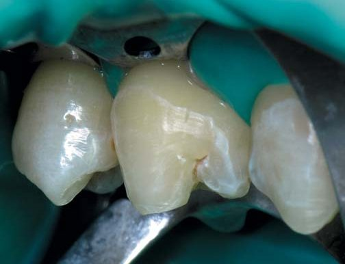
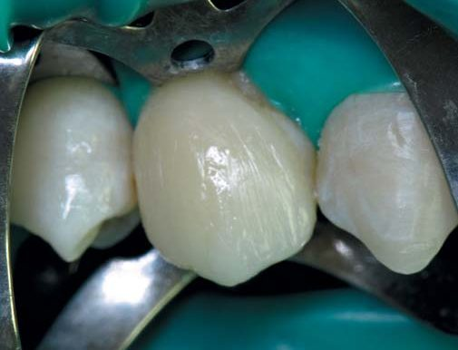
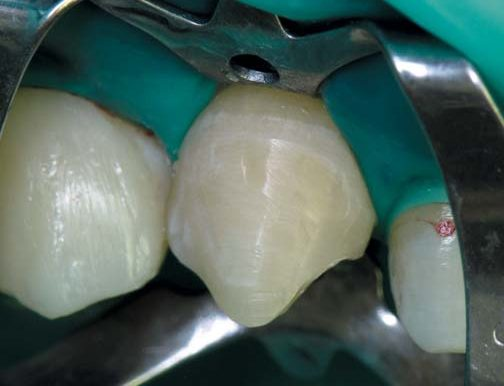
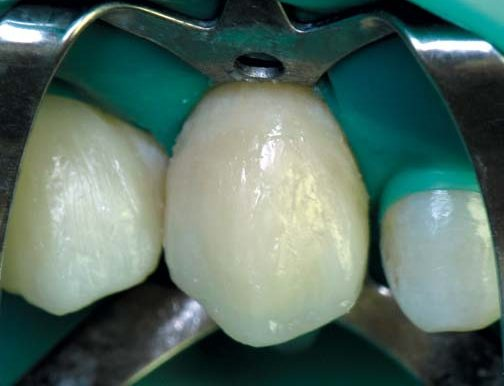
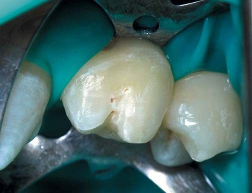
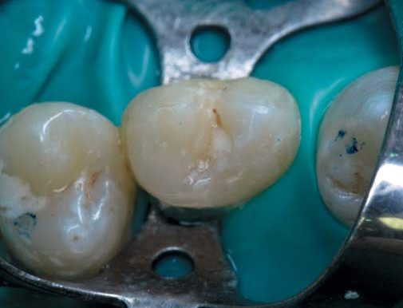
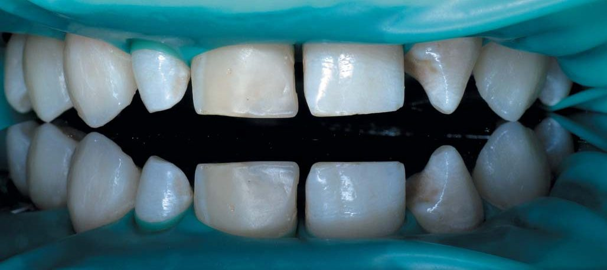
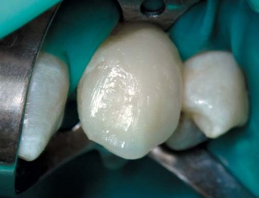
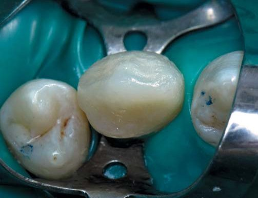
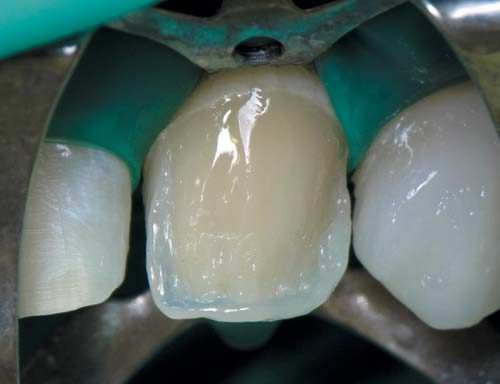
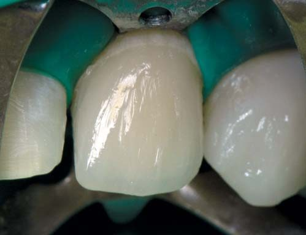
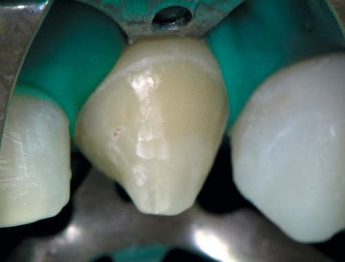
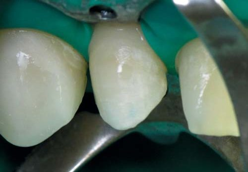
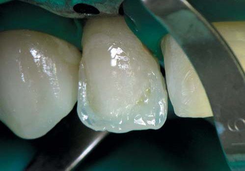
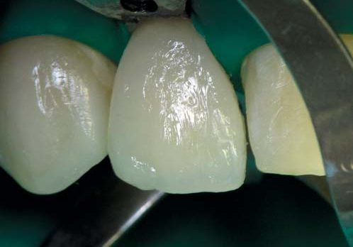
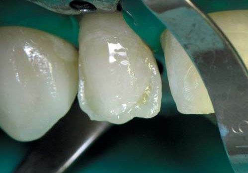
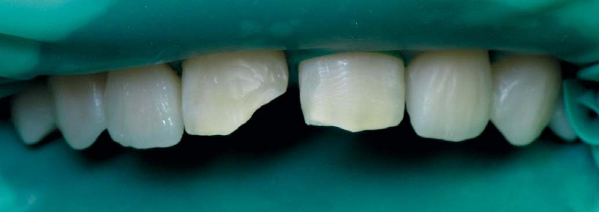
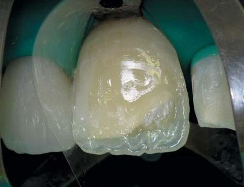
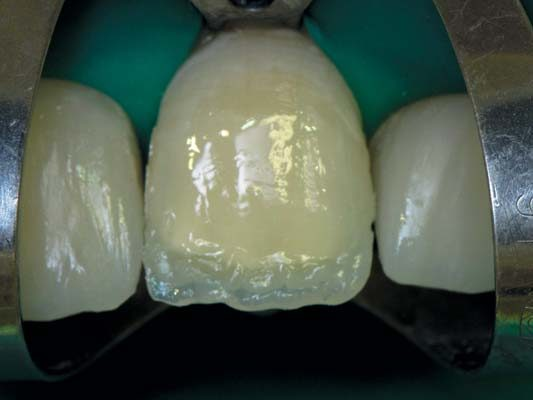
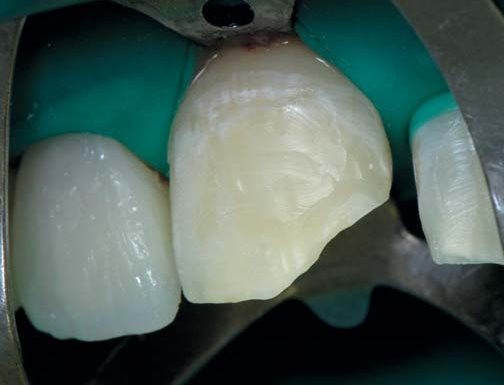
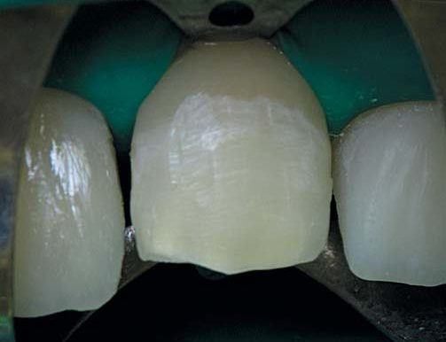
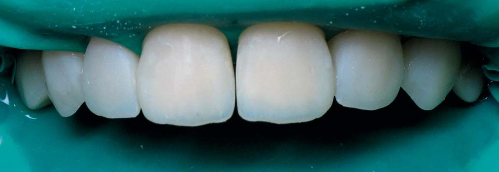
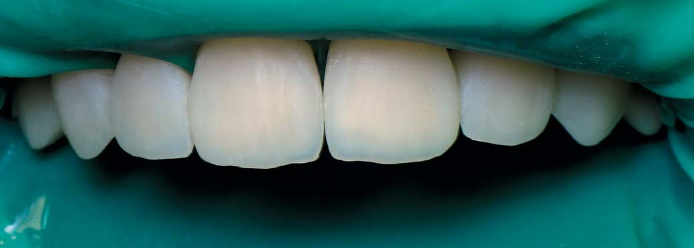
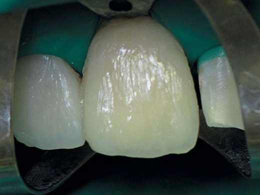
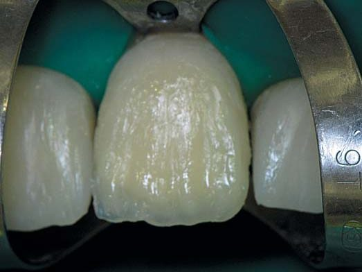
І фінальний результат — із повним задоволенням виконаною роботою з реконструкції лінії усмішки! Світлини через 3 місяці підтверджують гармонійну інтеграцію реставрації в естетичні параметри, орієнтовані на вимоги цього пацієнта.
Навіть за наявності таких ефективних методик завжди в пріоритеті мають бути своєчасна профілактика і лікування аномалій зубощелепної системи. Рання діагностика зубощелепних аномалій і їх своєчасне лікування запобігають стійким порушенням прикусу і зміні обличчя, а також загальним розладам організму.
Зовнішній вигляд реставрації через 7 років підтверджує задовільні експлуатаційні характеристики конструкцій. До виконання профілактичного чищення поверхня реставрації має первинний блиск, відсутність дефектів крайового прилягання композиту до зуба, але спостерігається наявність ділянок стирання по зонах функціонування ріжучого краю. Після закінчення терміну служби прямої реставрації (10 років) пацієнтові буде рекомендовано провести планову реновацію реставрації.

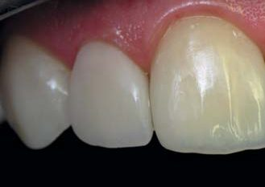
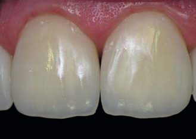
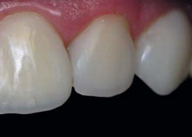
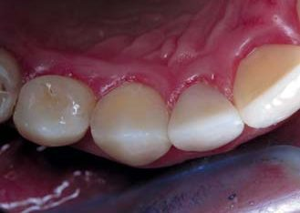
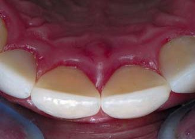
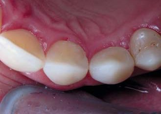
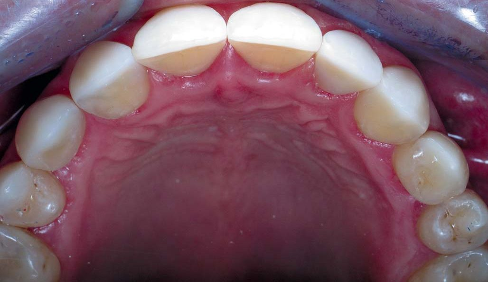
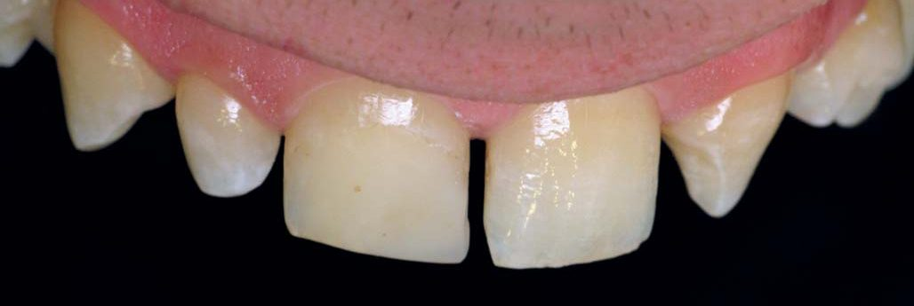
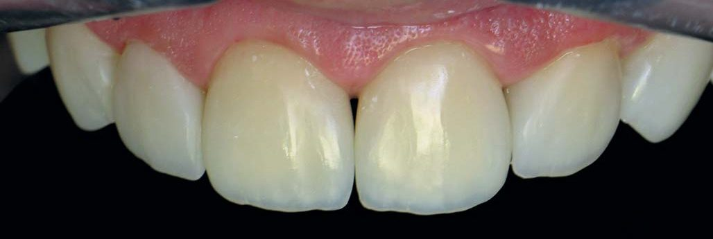
Результат реконструкції лінії усмішки; вигляд зубів після реставрації; світлини через 3 місяці; вигляд зубів через 7 років після реставрації та перед проведенням професійної гігієни і полірування.
Висновки
Композити добре зарекомендували себе, що підтверджує фотореєстрація результату через 7 років після виконання цієї роботи. Чи можуть реставрації служити вічно, коли вони зазнають уражень? Успіх, ефективність та довговічність конструкцій, виконаних у поданій методиці, залежать не тільки від точного дотримання протоколів адгезивної техніки, врахування показань та протипоказань у їх виконанні лікарем-стоматологом. Відповідальність також лежить і на пацієнті: гігієнічний догляд, коректне використання, регулярні профілактичні візити до свого стоматолога…
Література
- Радлинский С. В. Реконструкция зубов в адгезивной технике // ДентАрт. — 1997. — № 2. — С. 18-27.
- Радлинский С. В. Реконструкция зубного ряда // ДентАрт. — 1997. — № 3. — С. 53-66.
- Радлинский С. В. Трансформация зубов // ДентАрт. — 1999. — № 2. — С. 41-49.
- Дубивко С. А., Ахматова Г. Х., Белов Ю. Е. Анализ ортодонтического лечения взрослых // Казан. Вестн. Стоматологии. — 1995. — Кн. 1. — С. 114-118.
Література
- Радлінський С. В. Реконструкція зубів в адгезивній техніці // ДентАрт. — 1997. — № 2. — С. 18–27.
- Радлінський С. В. Реконструкція зубного ряду // ДентАрт. — 1997. — № 3. — С. 53–66.
- Радлінський С. В. Трансформація зубів // ДентАрт. — 1999. — № 2. — С. 41–49.
- Дубивко С. А., Ахматова Г. Х., Белов Ю. Е. Аналіз ортодонтичного лікування дорослих // Казанський вісник стоматології. — 1995. — Кн. 1. — С. 114–118.